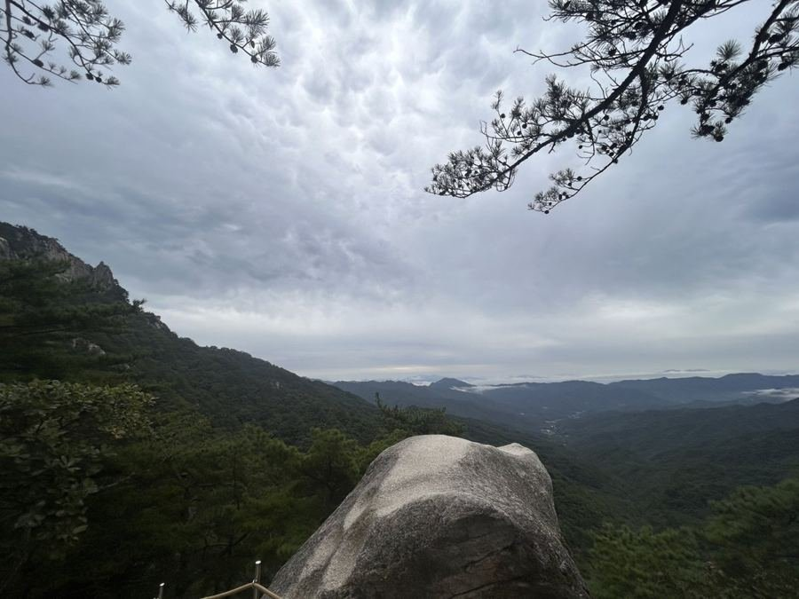
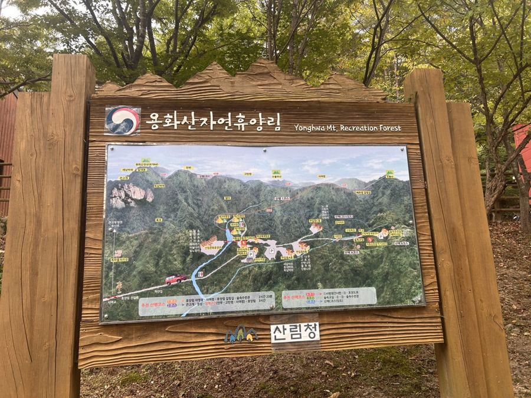
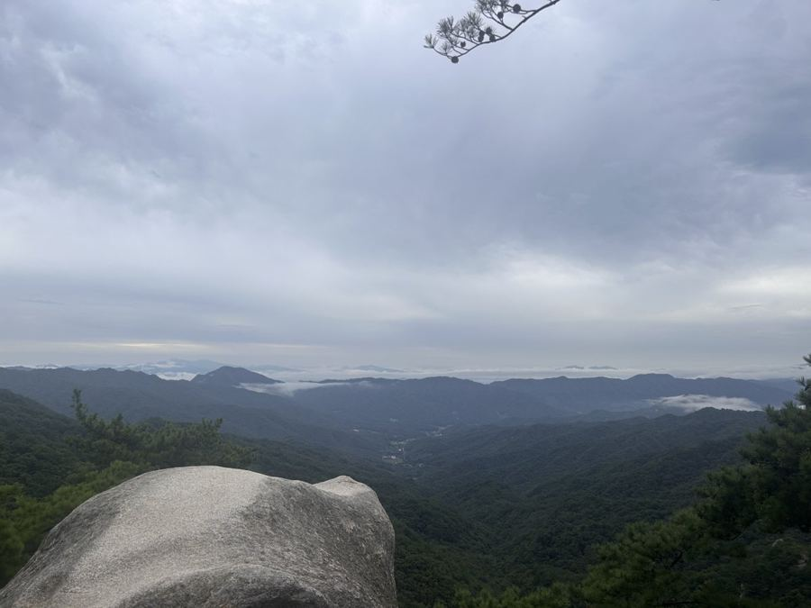
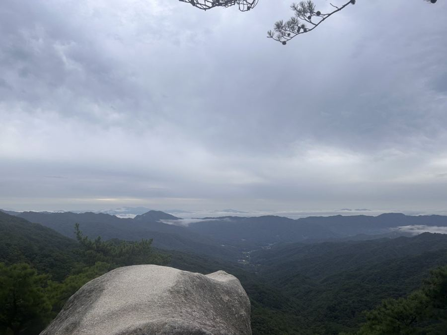
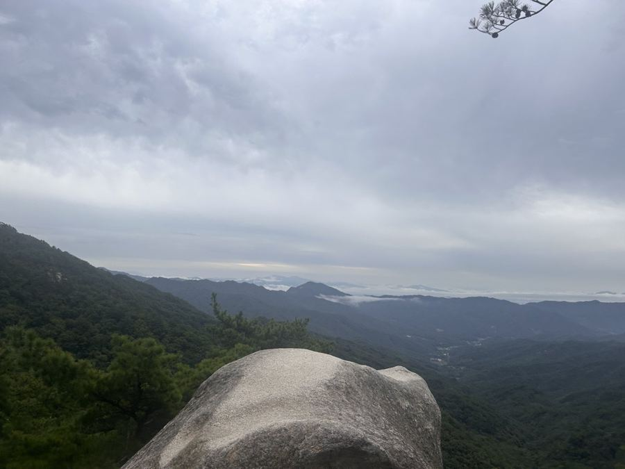
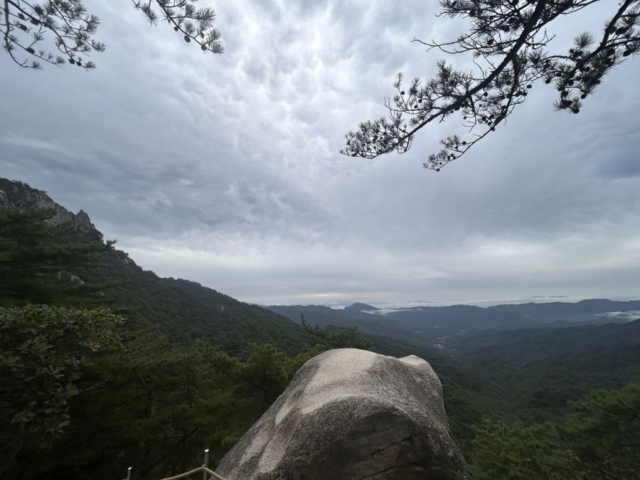
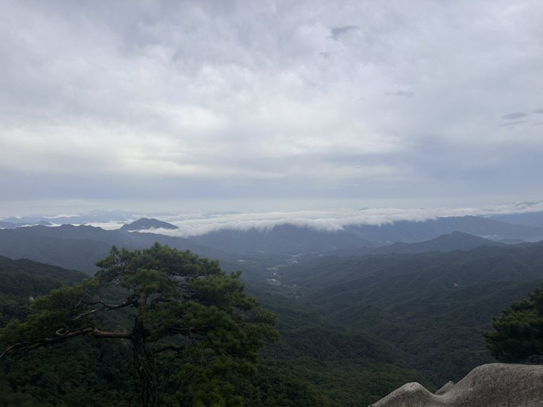
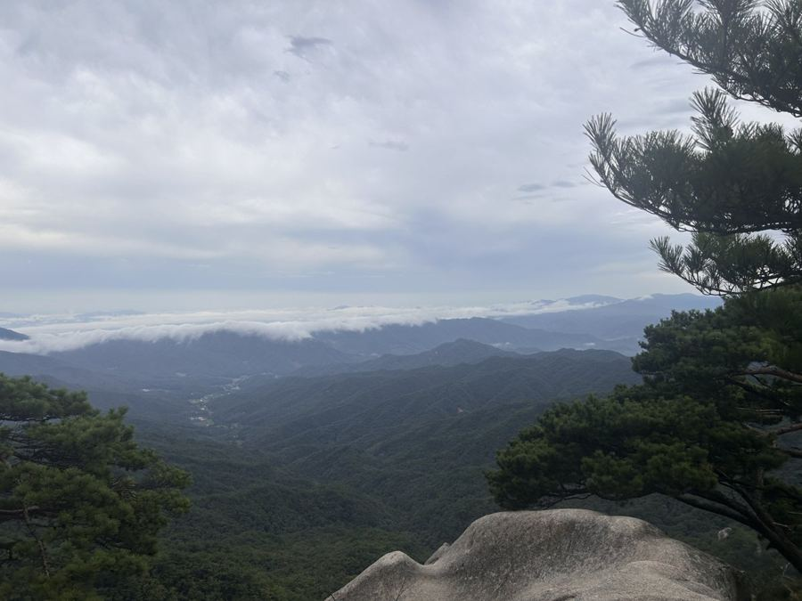
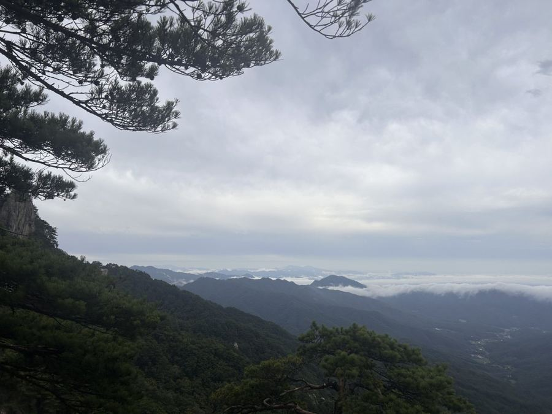
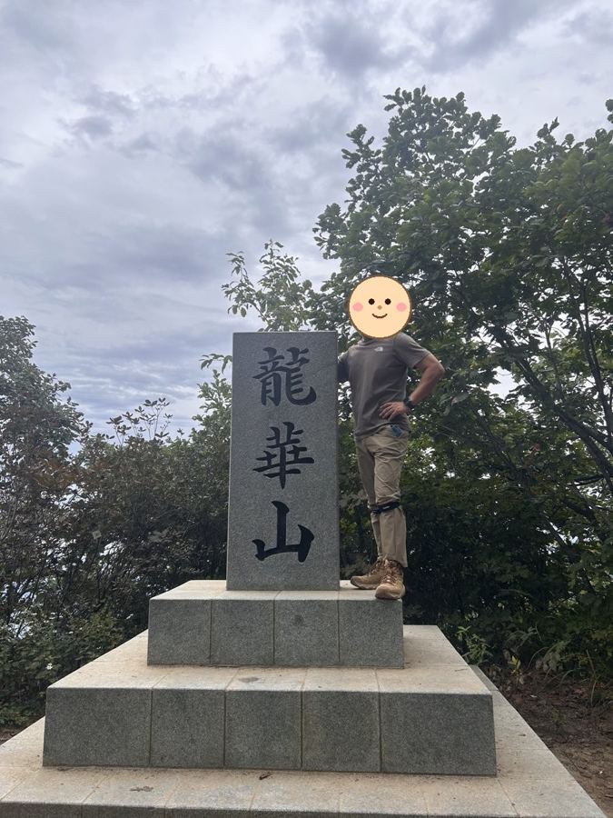

용화산은 춘천과 화천의 경계에 있는 878m 산입니다. 이 산이 유명한 이유는 풍경만이 아니라 접근성입니다. 큰고개 주차장까지 차로 오르면 정상까지 남은 거리가 50m 안팎입니다.
그래서 100대 명산 도전자들 사이에서 '가장 쉬운 인증'으로 통합니다. 시간이 부족한 날이나 다른 산과 묶어 하루에 두 곳을 채울 때 자주 선택됩니다.
물론 제대로 걷는 코스도 있습니다. 양통마을에서 큰고개를 거쳐 정상과 858봉을 돌아오는 3시간 10분 순환이나, 깔딱고개까지 붙이는 4시간 20분 코스가 대표적입니다. 큰고개로 오르는 도로 자체가 단풍철 드라이브 코스로도 알려져 있습니다.
등반기록
휴양림 입구에서 돌아서 큰고개주차장으로 — 계획 없이 떠난 가족 산행
출발, 그리고 계획에 없던 반전
이번 산행은 원래 등산이 목적이 아니었어요. 아들을 춘천에 데려다줄 겸 나선 길이었는데, 시간이 남아서 가족들을 꼬셔 "산이나 다녀오자" 하고 즉흥적으로 정한 곳이 춘천에서 가까운 용화산이었어요.
문제는 여기서부터였어요. 미리 자세히 알아보지 않고 "용화산자연휴양림"만 검색해서 출발했거든요. 도착한 게 오전 8시 30분이었는데, 휴양림 입구 주차장 차단봉에 '탐방객은 오전 9시 이후 입장 가능'이라는 문구가 떡하니 붙어 있더라고요.

일단 9시까지 기다려 보자고 가족들을 설득했어요. 9시 정각에 담당자분께 여쭤보니 정상까지 총 7시간이 걸린다고 하시더라고요. 주차요금 3천 원, 입장료 1인 천 원은 그렇다 치더라도, 이 말에 막내아들은 그야말로 황당해했어요.
결국 휴양림 정문 코스 대신 큰고개주차장 쪽으로 옮겨서 거기서 오르기로 했어요. 그런데 이미 시간이 늦어져서 큰고개주차장도 만석이었어요. 그래서 길가에 차를 대고 출발했어요 (다행히 고지대 도로라 주차 단속은 없을 것 같았어요).
큰고개주차장에서 시작
큰고개주차장에서 산행을 시작했어요. 처음부터 가파른 오르막이 이어져서 숨이 턱까지 차올랐어요.
고도를 높일수록 시야가 트이기 시작했어요. 흐린 날씨였지만 구름이 산 사이로 흘러가는 풍경이 오히려 운치 있었어요.
정상까지 왕복 2.61km, 고도 298m를 오르는 데 총 1시간 50분 40초가 걸렸어요. 짧지만 초반 경사가 꽤 급한 코스예요.



구름바다와 기암
가파른 오르막을 지나자 보상처럼 풍경이 펼쳐졌어요. 정상 부근에 우뚝 솟은 기암 봉우리가 인상적이고, 이날은 골짜기마다 구름이 낮게 깔려서 마치 구름 바다 위에 떠 있는 섬 같았어요.




정상, 龍華山
가파른 초입에 예상 못 한 코스 변경까지 겪고 나서 드디어 정상에 도착했어요. "龍華山"이라 새겨진 정상석 앞에서 가족 모두 인증샷을 남겼어요.

다음에 갈 사람을 위한 팁
- 큰고개주차장으로 바로 가는 것도 방법이에요 — 휴양림 정문은 9시 이후 입장이고 정상까지 7시간 코스예요. 시간이 없다면 처음부터 큰고개주차장 코스를 고려해 보세요.
- 주차장은 일찍 찰 수 있어요 — 큰고개주차장도 늦게 가면 만석이에요. 여유 있게 움직이는 게 좋아요.
- 초반 오르막이 급해요 — 시작부터 가파른 편이니 스트레칭하고 천천히 페이스를 조절하세요.
- 거리는 짧지만 만만치 않아요 — 왕복 2.61km, 상승고도 298m로 짧아 보여도 급경사 구간이 있어서 체감 난이도는 높아요.
- 흐린 날도 나쁘지 않아요 — 오히려 구름바다를 볼 수 있는 날씨였어요.
계획 없이 떠났다가 큰고개주차장으로 방향을 바꿔 완등한 산이에요. 짧지만 알찬 코스에 구름바다까지 더해져서 만족스러운 산행이었어요. 다음엔 코스를 제대로 확인하고 다시 가 보고 싶어요.
이 산의 포인트
- 큰고개 주차장에서 정상까지 50m 안팎
- 100대 명산 중 최단 시간 인증이 가능한 산
- 양통마을 기점 3시간대 순환 코스
- 큰고개 진입 도로의 가을 단풍 드라이브
등산 코스
| 코스 | 거리 | 소요 | 난이도 |
|---|---|---|---|
| 큰고개 최단 큰고개 주차장 → 용화산 정상 |
50m 안팎 | 왕복 1시간 이내 | 하 |
| 양통마을 순환 양통마을 → 큰고개 → 정상 → 858봉 → 양통마을 |
약 7km | 3시간 10분 | 중 |
| 양통 → 깔딱고개 순환 양통마을 → 큰고개 → 정상 → 858봉 → 깔딱고개 → 양통마을 |
약 9km | 4시간 20분 | 중 |
| 자연휴양림 코스 용화산자연휴양림 → 사여령 → 고탄령 → 안부 → 용화산 정상 (같은 길로 하산) |
왕복 약 10.4km | 5~6시간 | 상 |
인증장소
용화산 정상석 앞에서 인증합니다. 입장료는 없습니다.
가는 길
- 자가용
- 화천 하남면 삼화리의 큰고개 주차장이 대표 들머리입니다. 포장도로로 접근할 수 있습니다.
- 대중교통
- 춘천·화천에서 접근하되 배차가 드물어 자가용이 사실상 필수입니다.
주차장
- 용화산자연휴양림 주차장강원 춘천시 사북면 고성리
휴양림 코스 들머리입니다. 정상까지 왕복 5~6시간 걸리는 긴 코스라, 짧게 인증만 하려면 큰고개 주차장이 낫습니다.
- 큰고개 주차장강원 화천군 간동면 유촌리
정상까지 가장 짧은 고갯마루 들머리입니다.
주차 요금과 면수는 자주 바뀌고 성수기에는 임시 주차장·셔틀이 운영되기도 합니다. 출발 전에 지도 앱이나 공원 사무소로 한 번 더 확인하세요.
맛집
춘천·화천 경계라 닭갈비와 막국수가 기본입니다. 화천 쪽으로는 산천어와 손두부, 그리고 민물매운탕을 냅니다.
- 소양강농원 콩이랑두부랑들머리에서 11.0km강원특별자치도 춘천시 사우벌길 15
- [백년가게]명가춘천막국수들머리에서 12.7km강원특별자치도 춘천시 당간지주길 76 (근화동)
- 둥근닭갈비 막국수 닭보쌈들머리에서 9.3km강원특별자치도 춘천시 동내면 춘천순환로72번길 54
- 오수물막국수들머리에서 9.4km강원특별자치도 춘천시 신북읍 맥국2길 15
- 춘천통나무집닭갈비들머리에서 10.7km강원특별자치도 춘천시 신북읍 신샘밭로 763
한국관광공사에 등록된 음식점입니다. 맛집 순위가 아니며, 영업시간과 휴무일은 바뀔 수 있으니 먼 길이라면 미리 전화해 보세요.
언제 가면 좋은가
가을 단풍철이 가장 좋습니다. 큰고개까지 오르는 도로에서 이미 풍경이 시작됩니다. 겨울에는 도로 결빙에 주의하세요.
알아두면 좋은 것
- 시간이 없을 때 인증용으로 가장 효율적인 산입니다.
- 제대로 걷고 싶다면 양통마을에서 출발하는 순환 코스를 고르세요.
- 인근 오봉산·삼악산과 묶어 하루에 두세 곳을 도는 사람이 많습니다.
- 휴양림에서 출발하면 사여령·고탄령 능선을 거쳐 왕복 10km가 넘습니다. 휴양림은 오전 9시 이후에 들어갈 수 있으니 일찍 출발할 계획이면 큰고개 쪽을 고르세요.